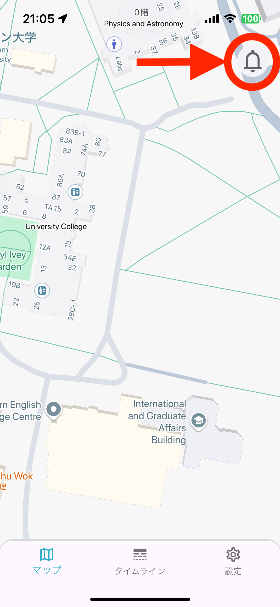
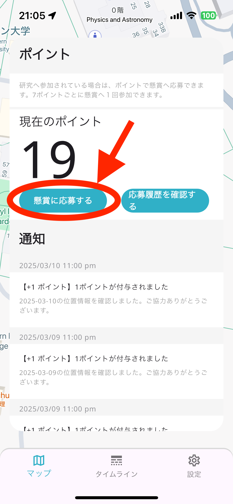
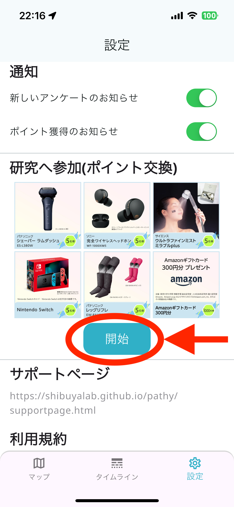
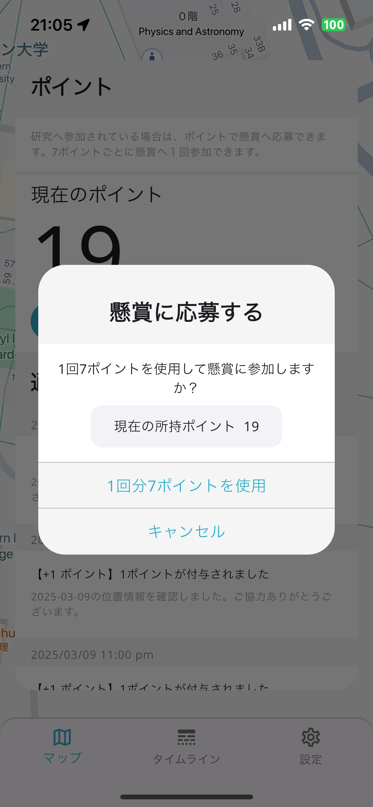
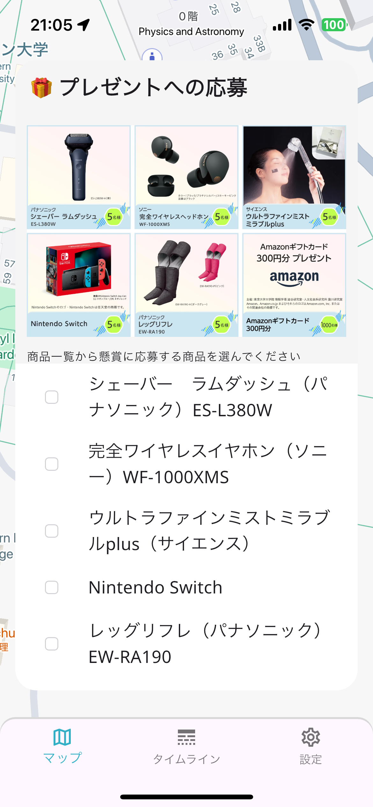
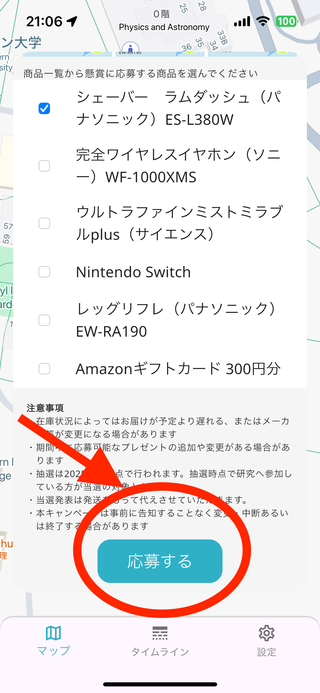
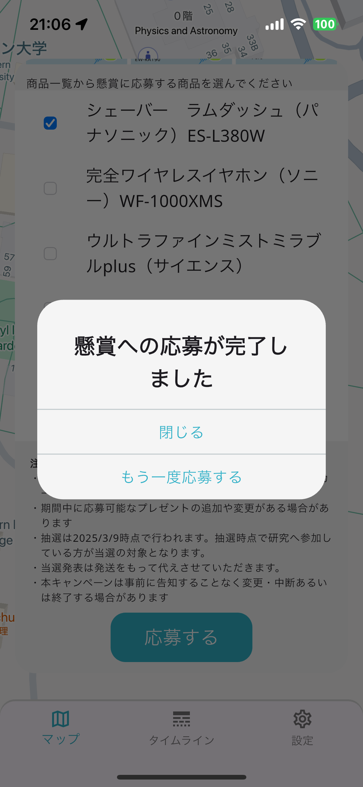

Projects
Pathy サポートページ
目次
1. トラブルシューティング
1.1. 懸賞への応募方法
懸賞へ応募するためには、「研究への参加」登録が必要です。
1. Pathyを開き、右下の「設定」ボタンを選びます。

2. 「研究へ参加（ポイント交換）」の下にある「開始」を選びます。

3. 利用許諾に同意した上で「この研究に参加する」をオンにしてください。その後、研究に参加するための回答が求められますので、回答を済ませてください。

懸賞に応募する
1. Pathyのマップ画面の右上のベルマークを選ぶと現在取得しているポイント数が確認できます。懸賞に応募できるポイントがある場合は「懸賞に応募」を選びます。
2. 「1回分７ポイントを使用」を選び、その後応募したい商品にチェックマークを入れます。ページに下部にある「応募する」を選びます
  
3. 「懸賞への応募が完了しました」と表示されたら応募は完了です

懸賞への応募履歴を確認する
Pathyマップ画面右上のベルマークを選んだのち、現在のポイントの右下に表示されている「応募履歴を確認する」を選ぶと確認することができます
1.2. 機種変更後ポイントが貯まらない
機種変更後ポイントが貯まらない場合は、スマートフォンの位置情報許可の設定が引き継がれていない可能性があります。 お使いのスマートフォンの設定を開き、Pathyの位置情報へのアクセスを「常に許可する」に変更してください。
2. 登録・機種変更・中止
| 項目
|
説明 |
|---|---|
| ユーザ登録 | メールアドレスの登録は必須ではありませんが、特典の抽選時に必要になります。 また、アプリのお知らせ機能が動作しない障害時、メール未登録の場合には、連絡が届かない可能性があります。 |
| 未成年の参加 | 未成年が参加する場合は保護者の同意が必要になります。 |
| 実験参加の中止 | 中止する場合には、設定画面の最下行にある[参加の中止]ボタンにタッチしてください。 アプリをアンインストールするだけでは、参加の中止にはなりませんので、必ず[参加の中止]をしてください。 実験参加を中止するとサーバからデータがすべて削除されます。また参加特典の権利を失いますのでご注意ください |
| 再登録時の注意 | 実験参加の中止をしたり、アプリを削除した場合には、再度アプリで登録をしても新規ユーザとして扱われますのでご注意ください。 |
| 機種変更 | アプリ登録時にメールアドレスを登録している場合には、別の機種で登録する際にそのメールアドレスを使用することで、同一のユーザのまま機種変更を行うことができます。メールアドレスが登録されていない場合にはその限りではありませんのでご注意ください。機種変更後にポイントが貯まらない場合は、スマートフォンの設定画面からPathyに位置情報を「常に許可する」設定になっていることを確認してください。 |
3. アプリの動作について
| 項目
|
説明 |
|---|---|
| 実験データ送信履歴 | 本アプリケーションが自動収集した実験データ（位置情報データなど）は、定期的にサーバに送信されます。この送信の履歴は「実験データ送信履歴」画面で確認することができます。通信状況によって送信されない場合がありますが、その場合、次回の送信時に合わせて送信されます。ただし７日間以上連続して失敗する場合、７日以前のデータは失われます。 |
| 実験データ送信のタイミング | 収集した実験データは、基本的に1時間に1回自動的にサーバに送信されます。アンケートへの回答データのみ回答時にサーバーへ送信されます。（送信間隔はスマートフォンの通信環境や処理状況に依存するため、前後する場合があります。）自宅等にWiFiに接続できる環境がある場合、WiFi接続時のみデータを自動送信する設定に変更することも可能です。また、必要に応じて手動操作での実験データの送信も可能です。 |
| 実験参加の中止 | 実証実験に参加された方には参加期間や参加内容に応じて応募できる抽選による賞品を用意しています。どうぞお楽しみに。ただし、以下の条件をお守りいただく必要があります。 (1) 7日間以上実験にご参加いただく必要があります。 (2) 途中、参加を中止されると参加特典は得られなくなります。 |
| 費用負担 | 追加の費用負担はありません。お使いの利用プランのなかでデータ送信が行われますのでご注意ください。 おおよその月毎の通信量は５MB程度になります。(たとえば、月々５GBのデータ通信契約をされている場合、このアプリだけの通信量はおおよそ契約量の 1/1000 になります) |
4. 本研究・アプリに関する連絡先
〒113-0033
東京都文京区本郷7-3-1
東京大学大学院 情報学環 澁谷研究室
Pathy事務局
E-mail: pathy-info-group@g.ecc.u-tokyo.ac.jp
To be updated.